Bestandteile Atlas
Ein geographischer Atlas ist ein mächtiges Werkzeug, das dir hilft, die Welt um dich herum besser zu verstehen. Mit Übung wirst du sicherer im Umgang mit Karten und kannst die Informationen schnell und effizient finden.
Aber was genau ist eigentlich ein Atlas?Ein Atlas ist eine Sammlung von Karten, die oft durch zusätzliche Informationen ergänzt werden. Es gibt unterschiedliche Atlanten (das ist die Mehrzahl von "Atlas"), aber der Aufbau ist stets ähnlich. Zu den Hauptbestandteilen eines Atlasses gehören verschiedene Arten von Karten, die jeweils unterschiedliche Informationen darstellen. In diesem Kurs wirst du sie noch alle kennenlernen!Neben den Karten enthält ein Atlas auch Register und Verzeichnisse, die dir helfen, schnell die gewünschte Karte oder Information zu finden, die du suchst. Ein Atlas kann auch Diagramme, Grafiken und Texte enthalten, die dir noch weitere Informationen bieten. |
Schau dir nun genauer an, welche Bestandteile ein Atlas hat:
Vergrößere die Ansicht, bevor du startest! Drücke ESC-Taste zum Verkleinern.
